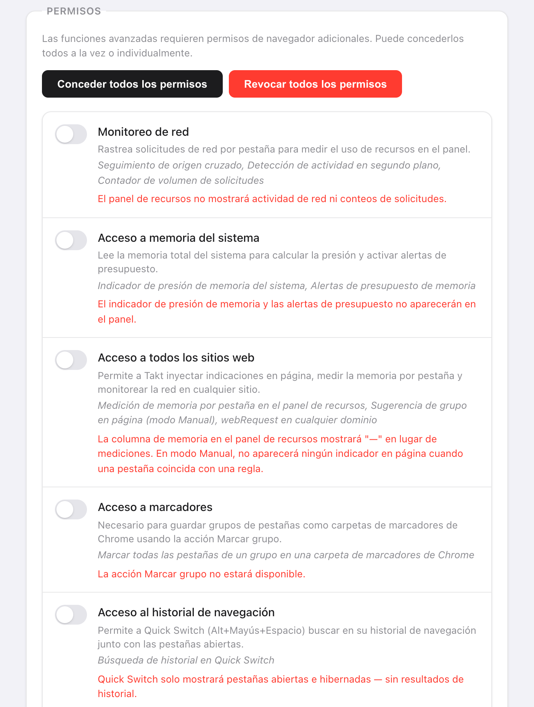

Respuesta corta: Takt no envía datos de navegación a ningún sitio. Hace dos tipos de petición de red, y los dos están detallados abajo.
- Comprobación de licencia a ExtensionPay: al arrancar, cada 15 minutos y cuando abres el popup.
- Sincronización con Google Drive: solo si la conectas (Premium).
- Sin cuenta, sin analíticas, sin telemetría. La agrupación con IA usa el modelo de Chrome en el dispositivo.
¿Por qué debería fiarme de una extensión de pestañas?
Puede que no te fíes, y es razonable. En 2021, Google retiró The Great Suspender, una extensión para suspender pestañas, después de que apareciera código malicioso en una versión publicada tras su venta. Sus usuarios habían instalado algo útil, y una actualización lo volvió en su contra.
Un gestor de pestañas necesita leer las URL de tus pestañas para funcionar. Así que las preguntas útiles son: qué hace con ellas, quién más las recibe y si eso puede cambiar sin que te enteres. El resto de esta página responde a esas preguntas para Takt, con cosas que puedes comprobar tú mismo.
¿Qué se queda en mi equipo?
Todo lo que Takt sabe sobre tu navegación vive en el almacenamiento de extensiones del propio Chrome:
- Reglas, configuración y perfiles en
chrome.storage.sync. - Sesiones, pestañas hibernadas, recuentos de coincidencias de reglas y el historial de dominios en el que se basan las sugerencias de reglas, en
chrome.storage.local.
Un matiz: si la sincronización de Chrome está activada, el propio Chrome copia chrome.storage.sync entre tus dispositivos a través de tu cuenta de Google. Es una función de Chrome, no un servidor de Takt.
¿Con qué servidores se comunica Takt?
| Servicio | Cuándo | Qué recibe |
|---|---|---|
| ExtensionPay (licencia) | Al arrancar, cada 15 minutos y al abrir el popup | Una clave de licencia aleatoria. Ni URL ni datos de pestañas. |
| API de Google Drive | Solo después de conectar Drive. Cada 15 minutos si la sincronización automática está activada. | Los archivos de sincronización de Takt, en la carpeta oculta de apps de Drive |
| Inicio de sesión de Google | Al conectar o desconectar Drive | Al conectar, una consulta de tu correo para mostrar qué cuenta está vinculada. Al desconectar, una petición para revocar el token de acceso de Takt. |
Un detalle que conviene saber: ExtensionPay solo crea esa clave de licencia la primera vez que abres la página de mejora o de inicio de sesión. Hasta entonces, la comprobación no encuentra ninguna clave y termina sin hacer ninguna petición de red.
La sincronización con Drive usa el ámbito drive.appdata. Takt puede leer y escribir sus propios archivos en una carpeta oculta y no puede ver el resto de tu Drive. La sincronización con carpeta, la otra opción de copia de seguridad, escribe en una carpeta que eliges tú; la subida, si la hay, la hace tu propio cliente de nube.
Hay otras dos cosas que abren una página web, y ninguna es una petición en segundo plano. El enlace para dejar una reseña abre Chrome Web Store cuando haces clic en él. Y al desinstalar, Chrome abre una página de comentarios que recibe valores genéricos como la versión, el plan y un rango del número de reglas. La política de privacidad enumera cada valor.
¿La agrupación con IA funciona en el dispositivo?
Sí. La agrupación con IA usa el modelo de lenguaje integrado de Chrome, que se ejecuta en tu ordenador. Chrome descarga el modelo la primera vez que se usa, y Takt muestra el progreso. Si el modelo no está disponible, Takt agrupa por similitud, también en local.
Para ser exactos sobre lo que ve el modelo: el título de cada pestaña y, en las páginas que Chrome deja leer a Takt (lo permite el acceso a todos los sitios), los primeros 500 caracteres del texto visible. Ese texto va al modelo de tu equipo y a ningún otro sitio. No existe ningún servidor de Takt al que enviarlo.
Si lo único que quieres es agrupar con IA de vez en cuando, la función "Organizar pestañas similares" de Chrome también funciona en el dispositivo y no necesita ninguna extensión. Takt está pensado para reglas que se mantienen, y además bloqueo de duplicados, hibernación y sesiones.
¿Por qué pide Takt cada permiso?
Al instalar se conceden ocho permisos. Cada uno corresponde a una función:
| Permiso | Para qué |
|---|---|
tabs | Leer las URL y los títulos de las pestañas para aplicar tus reglas |
tabGroups | Crear grupos, ponerles nombre y color, y contraerlos |
activeTab | Actuar sobre la pestaña actual cuando haces clic en el popup |
storage | Guardar reglas, configuración y sesiones |
scripting | Mostrar el aviso de duplicados y la superposición de Quick Switch; leer el texto de las páginas para la agrupación con IA |
contextMenus | Opciones del menú contextual como Hibernar esta pestaña |
notifications | Alertas como los avisos de presupuesto de memoria |
alarms | Tareas programadas: hibernación automática, horarios de perfiles, comprobación de licencia |
Todo lo demás es opcional y está desactivado hasta que una función lo necesita: webRequest, system.memory y el acceso a todos los sitios para el Panel de recursos (el acceso a todos los sitios también permite a la agrupación con IA leer el texto de las páginas), bookmarks para guardar un grupo como marcador, history para la búsqueda de Quick Switch y las sugerencias de reglas, downloads para la búsqueda de Quick Switch, identity para la sincronización con Drive. Puedes revocar cualquiera de ellos en Settings, o hacer que Takt no los pida nunca.

¿Cómo puedo comprobarlo yo mismo?
- Abre
chrome://extensionsy activa el Modo de desarrollador. - En la tarjeta de Takt, haz clic en service worker, junto a "Inspeccionar vistas".
- Abre la pestaña Red y sigue navegando. Solo deberías ver las peticiones de la tabla anterior, además de Takt leyendo sus propios archivos
chrome-extension://.
La política de seguridad de contenido de Takt es script-src 'self'. Solo puede ejecutar código incluido en la extensión, así que no puede descargar código nuevo de un servidor. Cualquier cambio de comportamiento tiene que publicarse como una nueva versión en Chrome Web Store.
De qué no te protege esto
- Sigues confiando en las actualizaciones. Chrome instala las versiones nuevas automáticamente. Ninguna política puede impedir que una versión futura cambie; la pestaña Red es la forma de notarlo.
- ExtensionPay es un tercero. En cuanto existe una clave de licencia, ve esa clave y, como cualquier servidor, tu dirección IP.
- El permiso
tabses amplio. Takt puede leer la URL y el título de todas las pestañas. Así funcionan las reglas. Lo importante es que eso se queda en tu equipo.
Un gestor de pestañas que no tiene a quién llamar a casa.
Añadir Takt a Chrome, gratisPreguntas frecuentes
¿Envía Takt mi historial de navegación o las URL de mis pestañas a algún sitio?
No. Las reglas, la coincidencia, las sesiones, las pestañas hibernadas y las sugerencias se quedan en el almacenamiento de Chrome, en tu equipo. Lo único que sale es la comprobación de licencia y, si lo conectas, los archivos de sincronización de Takt en tu propio Google Drive.
¿Takt necesita una cuenta?
No. No existe ninguna cuenta de Takt. Premium (3 $/mes o 30 $/año) se paga a través de ExtensionPay, que usa Stripe.
¿La agrupación con IA de Takt se hace en la nube?
No. Usa el modelo integrado de Chrome, que funciona en el dispositivo. Sin el modelo, Takt agrupa por similitud, también en local.
¿Por qué necesita Takt el permiso tabs?
Para leer la URL y el título de cada pestaña y compararlos con tus reglas. La coincidencia se calcula en el navegador; no se transmite nada.
¿En qué se diferencia de The Great Suspender?
The Great Suspender se retiró en 2021 después de que apareciera código malicioso en una versión publicada tras su venta. La política de seguridad de contenido de Takt solo permite scripts incluidos en la extensión, así que cualquier cambio tiene que publicarse como una nueva versión en Chrome Web Store, que puedes inspeccionar.